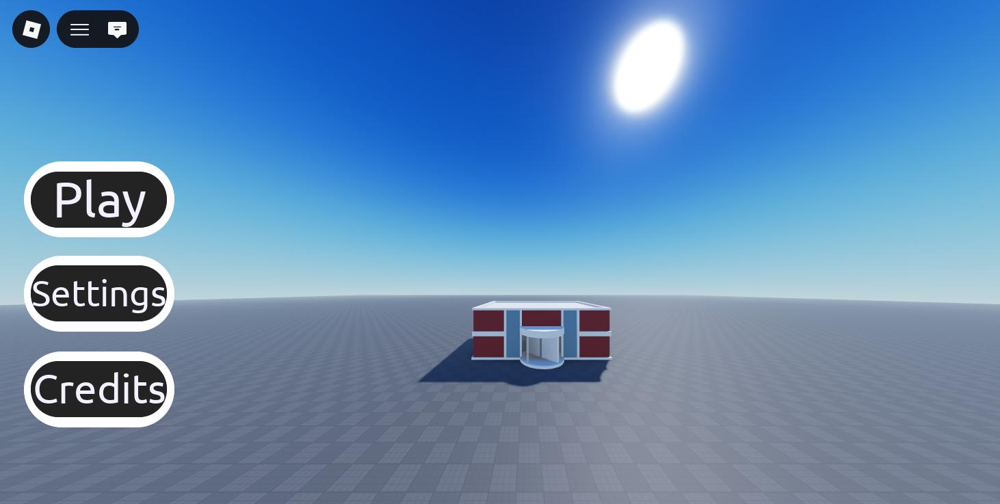
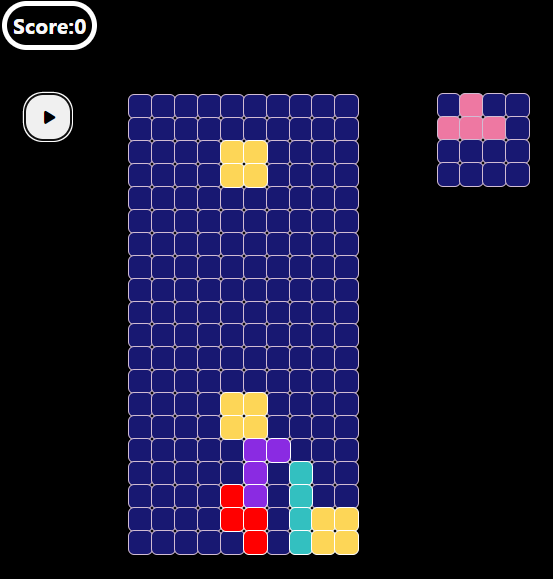
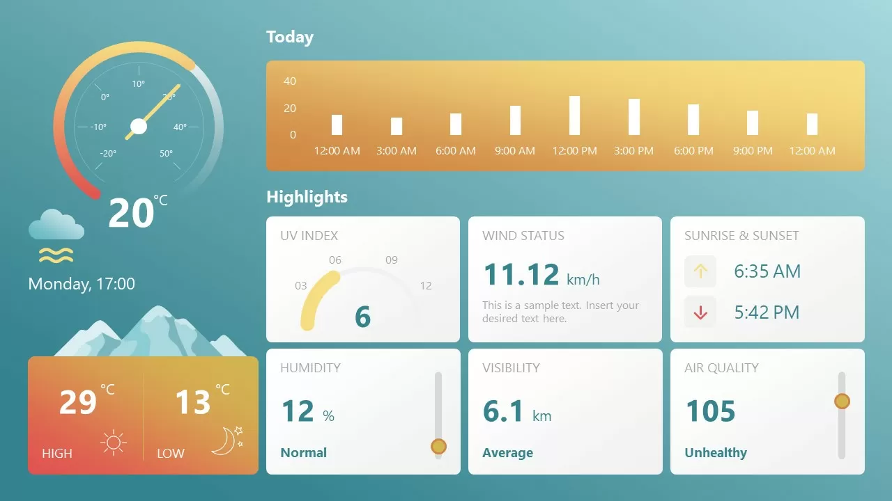
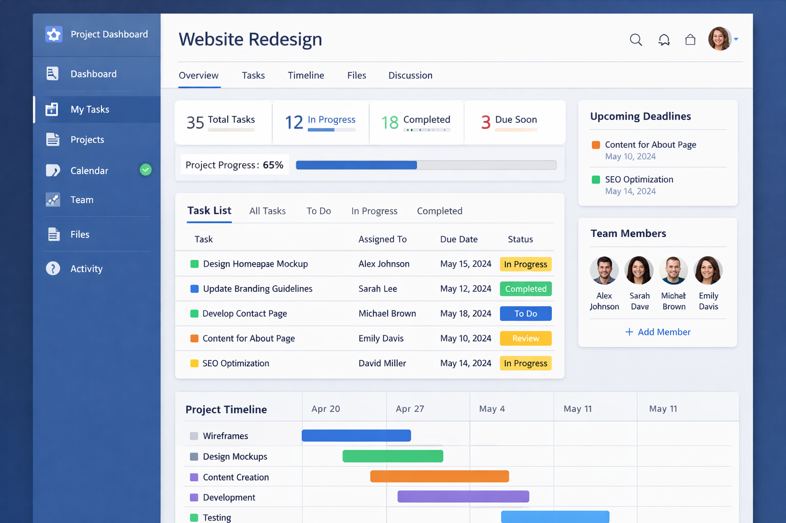

My portfolio!
Toy store

A fun and interactive multiplayer toy store game created using Lua on the Roblox platform. Features a variety of toys, user-friendly controls, and engaging gameplay mechanics.
Original work by Natalie
View ProjectTetris

A classic block-stacking puzzle game implemented with HTML, CSS, and JavaScript. Features smooth controls, scoring, and level progression.
Original work by Natalie
View ProjectWeather Dashboard

A clean and responsive weather app that displays current weather conditions and 5-day forecasts. Features location search, temperature units toggle, and animated weather icons.
Image source: SlideModel
View ProjectTask Manager

An interactive to-do list app with task filtering, priority levels, and local storage. Users can add, edit, delete, and mark tasks as complete with a cute and intuitive interface.
Image: AI generated
View Project